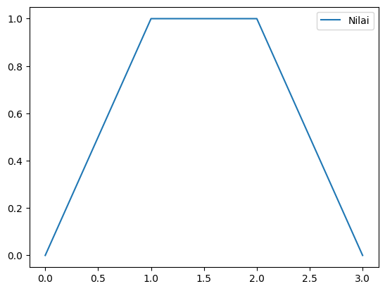

Pertemuan 4 (10/03/2026)#
Logika Fuzzy
fuzzy adalah sebuah sistem yang mengkategorikan sebuah nilai
contohnya adalah : Pandai dan Rajin, jika seseorang memiliki nilai dari range 0 - 0.5 maka ia akan masuk kedalam golongan orang orang pandai, dan untuk range 0.6 - 1 adalah untuk orang orang yang pandai
pip install matplotlib seaborn pandas
Requirement already satisfied: matplotlib in C:\Users\mappattiro\kal\kal\Lib\site-packages (3.10.8)
Requirement already satisfied: seaborn in C:\Users\mappattiro\kal\kal\Lib\site-packages (0.13.2)
Requirement already satisfied: pandas in C:\Users\mappattiro\kal\kal\Lib\site-packages (3.0.1)
Requirement already satisfied: contourpy>=1.0.1 in C:\Users\mappattiro\kal\kal\Lib\site-packages (from matplotlib) (1.3.3)
Requirement already satisfied: cycler>=0.10 in C:\Users\mappattiro\kal\kal\Lib\site-packages (from matplotlib) (0.12.1)
Requirement already satisfied: fonttools>=4.22.0 in C:\Users\mappattiro\kal\kal\Lib\site-packages (from matplotlib) (4.61.1)
Requirement already satisfied: kiwisolver>=1.3.1 in C:\Users\mappattiro\kal\kal\Lib\site-packages (from matplotlib) (1.4.9)
Requirement already satisfied: numpy>=1.23 in C:\Users\mappattiro\kal\kal\Lib\site-packages (from matplotlib) (2.4.2)
Requirement already satisfied: packaging>=20.0 in C:\Users\mappattiro\kal\kal\Lib\site-packages (from matplotlib) (26.0)
Requirement already satisfied: pillow>=8 in C:\Users\mappattiro\kal\kal\Lib\site-packages (from matplotlib) (12.1.1)
Requirement already satisfied: pyparsing>=3 in C:\Users\mappattiro\kal\kal\Lib\site-packages (from matplotlib) (3.3.2)
Requirement already satisfied: python-dateutil>=2.7 in C:\Users\mappattiro\kal\kal\Lib\site-packages (from matplotlib) (2.9.0.post0)
Requirement already satisfied: tzdata in C:\Users\mappattiro\kal\kal\Lib\site-packages (from pandas) (2025.3)
Requirement already satisfied: six>=1.5 in C:\Users\mappattiro\kal\kal\Lib\site-packages (from python-dateutil>=2.7->matplotlib) (1.17.0)
Note: you may need to restart the kernel to use updated packages.
import pandas as pd
df = pd.DataFrame({'Nilai' : [0.0,1,1,0.0]})
df.plot()
<Axes: >

Buat sebuah fuzzy tentang beasiswa seperti pada PPT, langkah pembuatannya ada di :
https://www.geeksforgeeks.org/artificial-intelligence/fuzzy-logic-applications-in-ai/
%pip install --upgrade --force-reinstall scikit-fuzzy --target="C:\Users\mappattiro\kal\kal\Lib\site-packages"
Collecting scikit-fuzzy
Using cached scikit_fuzzy-0.5.0-py2.py3-none-any.whl.metadata (2.6 kB)
Using cached scikit_fuzzy-0.5.0-py2.py3-none-any.whl (920 kB)
Installing collected packages: scikit-fuzzy
Successfully installed scikit-fuzzy-0.5.0
Note: you may need to restart the kernel to use updated packages.
import sys
import os
site_pkg = r"C:\Users\mappattiro\kal\kal\Lib\site-packages"
if site_pkg not in sys.path:
sys.path.insert(0,site_pkg)
try:
import skfuzzy as fuzz
from skfuzzy import contrrol as ctrl
print("berhasil")
except importError:
print("gagal")
---------------------------------------------------------------------------
ModuleNotFoundError Traceback (most recent call last)
Cell In[4], line 9
8 try:
----> 9 import skfuzzy as fuzz
10 from skfuzzy import contrrol as ctrl
File ~\kal\kal\Lib\site-packages\skfuzzy\__init__.py:24
19 ######################
20 # Subpackage imports #
21 ######################
22
23 # Core fuzzy mathematics subpackage
---> 24 import skfuzzy.fuzzymath as _fuzzymath # noqa: E402
25 from skfuzzy.fuzzymath import * # noqa: E402,F403
File ~\kal\kal\Lib\site-packages\skfuzzy\fuzzymath\__init__.py:44
42 from .fuzzy_logic import fuzzy_and, fuzzy_or, fuzzy_not
---> 44 from ._continuous_to_discrete import continuous_to_discrete
File ~\kal\kal\Lib\site-packages\skfuzzy\fuzzymath\_continuous_to_discrete.py:2
1 import numpy as np
----> 2 import scipy.linalg
5 def continuous_to_discrete(a, b, sampling_rate):
ModuleNotFoundError: No module named 'scipy'
During handling of the above exception, another exception occurred:
NameError Traceback (most recent call last)
Cell In[4], line 12
10 from skfuzzy import contrrol as ctrl
11 print("berhasil")
---> 12 except importError:
13 print("gagal")
NameError: name 'importError' is not defined